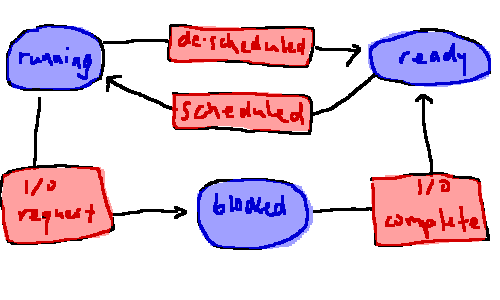
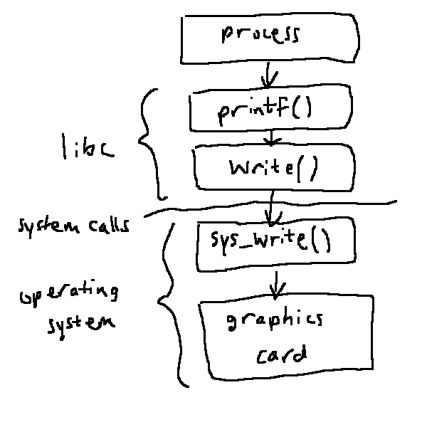

operating systems lie between the applications and hardware resources. we have fewer resources than we have users! challenges:
pillars of operating systems per ostep: virtualization, concurrency, persistence (bonus: security)
hierarchy: users > applications > operating system > hardware
usb sticks use an old file system called fat32. they have 2^32 sectors each of which can store 1 KiB in theory, so they can store ~2 TiB
in a virtualized environment, we have infinite cpu time and infinite memory. in real life we don't! how do we share it?
concurrency is the ability for 1 processor to switch context between multiple independent processes. vs parallelism is multiple processors doing things at the same time. parallelism ⊂ concurrency
in a good OS, the processes are unware they're being run concurrently
persistence is about retaining information even after the process finishes. but we also need to protect against failure and unauthorized access. eg the OS lives in RAM, but the process might also need to use the RAM. how do we prevent it from destroying the OS?
'security is the inverse of usability'
a process in an execution stream (flow of commands) in the context of some state (anything that affects or is affected by the process)
we'll be making some simplifying assumptions for now. these aren't actually true
from the process's pov nothing else is executing at the same time
a program consists of static code and some data. a process is an instance of a program. so "f : program ↦ process" is a one-to-many relation
the OS provides an illusory deidcated CPU to each process. these are virtual CPUs
processes all have 4 segments that live in memory: code, data, stack (fn calls and locals), heap (dynamic memory)
these days we have multi threaded processes. a thread is an execution stream in an address space. they each require their own stack (but use the same code/data/heap as the other threads). we're gonna come back to this later
forms of resource sharing:
an address space is the range of memory addresses a process is allowed to rwx (read/write/execute) while it runs. if we do space sharing of memory, the process doesn't know the absolute addresses of anything it needs! so we need to tell the process the relative addresses. this is the virtual address space
for virtualizing the CPU we time share the processor. but we use space sharing for memory and disk
the scheduler decides, at any moment in time, what process runs next, or when to switch between processes. it needs to keep a list of processes and some metadata about them, and it has to enforce some system policy about what to execute next. the mechanism is the implementation of the policy. separating policy and mechanism lets the mechanism be more flexible, and we can analyze them separately
when a process is created the OS does these things:
the OS owns all the memory, so it needs to reserve some metadata. hm. is the OS a process? then it shouldn't be able to access the other processes' memory. aaaa
to model this life cycle we could use a state machine:
for each process we have a diagram like this:

the scheduler can only select programs that are ready. what if there aren't any? then we idle. magical process that always has something to do, which is "do nothing"! waste of resources tho
the process control block is the process metadata. for now it has the PID, state, virtual address space, processor context, .... these live in the PCB list / process list which is a linked list. there are a finite numbers of PIDs so you can only run finitely many processes! but we can recycle them
each thread has its own stack pointer, program counter, and any other registers it needs. so we also need a thread list

the process API is a subset of the system calls to control processes
fork()in the parent, it returns the PID of the child (positive number). in the child it returns 0
this is called fork because after we call fork we need to check the PID ourselves
exec()replaces the address space of the current process with another loaded from disk
we often use exec() after
fork()
exit() and wait()
the child process calls exit(int retval) to provide a return value. 0 for
success, nonzero for failure
the parent may wait(int &pid) for any child to finish, and puts the
PID of that child in pid
the retval lives in the PCB for the child, which is still around because the parent might not have called
wait() yet
every process has init (process with PID of zero) as its oldest parent
tbd is the kernel a process?
problems: any process may
to enforce LDE, we need 2 modes: kernel mode and user mode. instructions that can only run in kernel mode are privileged. if we try to run them in user mode we get a trap = illegal instruction exception. raising this trap is a hardware instruction that has 2 steps:
we want to handle different illegal operations in different ways, so we have a trap table prescribed by the hardware and filled in by the OS to that specification. it has entries like
| name | number | address |
|---|---|---|
exit() |
5 | 0x0000c844 |
on RISC-V the ecall instruction runs the trap stored in the register
a7
privileged instruction examples: open(),
fork() etc, allocating more memory, ...